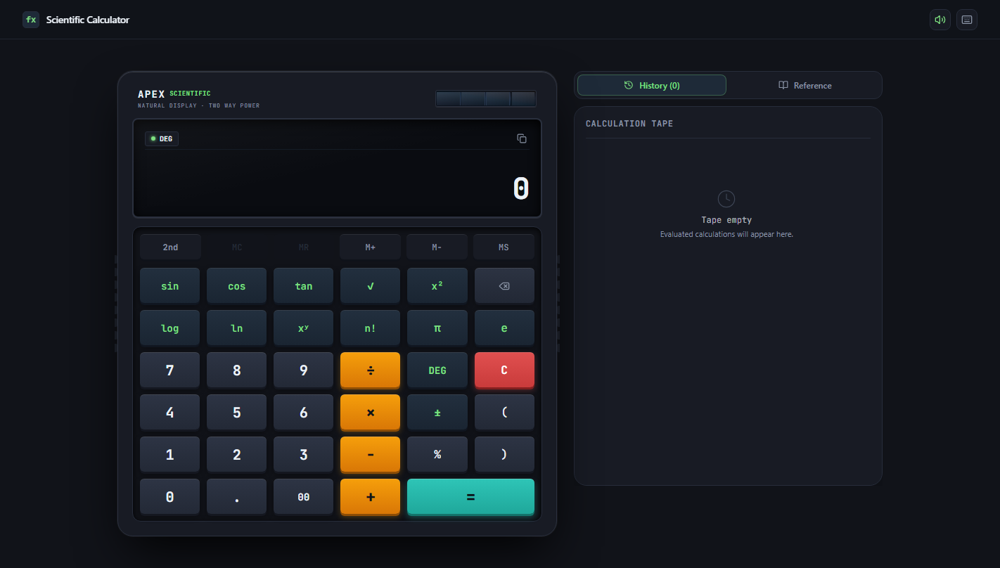
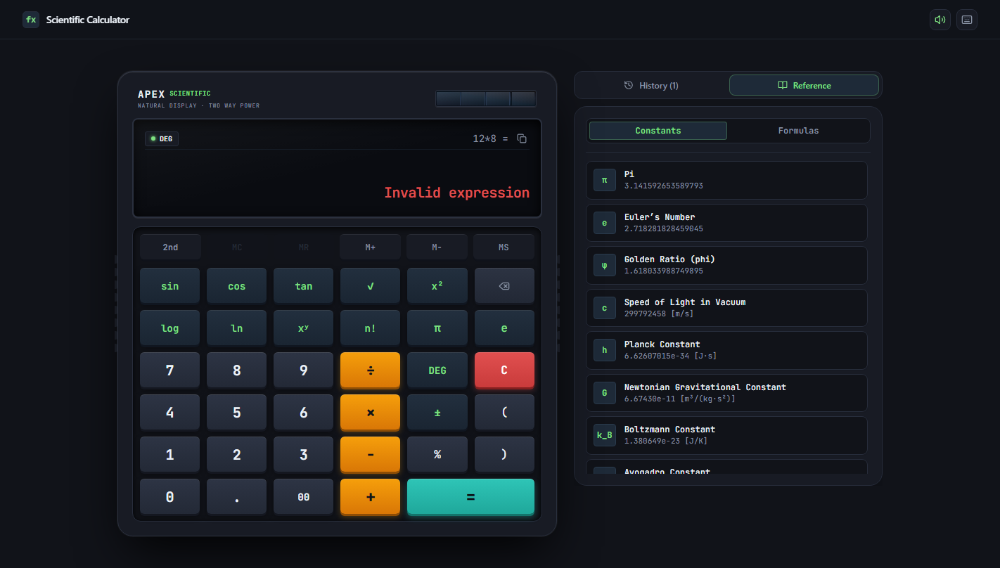
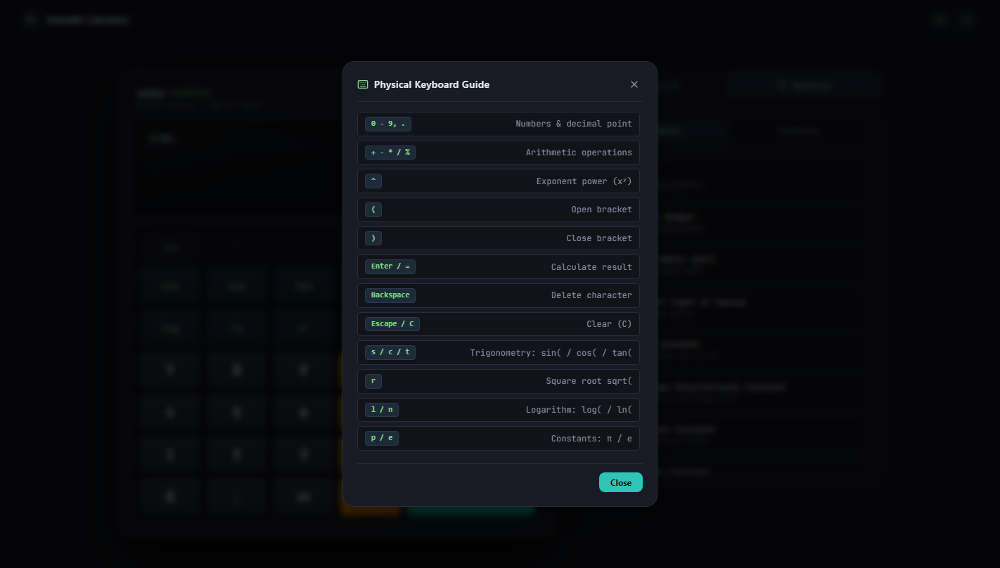

eval() security risks and parsing vulnerabilities.localStorage.eval(), enabling code injection.-5^2 vs (-5)^2).eval(). Complete mathematical safety.neg) and binary subtraction based on token boundaries.localStorage logging with 1-click re-injection of previous results and 8 scientific constants.Scans raw character stream. Resolves numbers, constants (π, e), functions (sin, log), and flags contextual unary minus.
Applies Dijkstra's algorithm. Orders tokens into Reverse Polish Notation (RPN) using precedence & associativity tables.
Pops operands into accumulator stack. Executes arithmetic, applies DEG/RAD conversions, and traps mathematical domain faults.
Updates LCD annunciators, appends paper tape item to storage, and triggers Web Audio acoustic impulse response.
θ_rad = θ_deg × (π / 180).0.1 + 0.2 = 0.3).App.tsx: Orchestrates state machine, hotkey interceptors, and audio synthesis.Display.tsx: Dynamic auto-scaling typography and dual-power solar frame.Keypad.tsx: 36 tactile keycaps with 2nd mode register shifts.HistoryPanel.tsx: Real-time paper tape with granular deletion and 1-click restore.| Token | Operation Type | Precedence | Associativity | Evaluated Result |
|---|---|---|---|---|
!, % |
Factorial, Percentage | Level 5 (Highest) | Left-to-Right | 5! = 120, 50% = 0.5 |
^ |
Power / Exponentiation | Level 4 | Right-to-Left | 2 ^ 3 ^ 2 = 512 |
neg |
Unary Minus (±) | Level 3 | Right-to-Left | -5 ^ 2 = -25 |
*, / |
Multiply, Divide | Level 2 | Left-to-Right | 10 + 2 * 3 = 16 |
+, - |
Addition, Subtraction | Level 1 (Lowest) | Left-to-Right | 15 - 5 + 2 = 12 |
fn(...) |
Trig, Log, Root functions | Immediate Stack | Function Arguments | sin(30) = 0.5 |
Differentiating binary subtraction a - b from negative numbers -x without ambiguous syntax:
-5 is parsed as neg 53 * -4 becomes 3 * (neg 4)2 / (-8) becomes 2 / (neg 8)x / 0 → Trapped as "Divide by zero"√(-x) → Trapped as "√ of negative number"ln(0) → Trapped as "Non-positive number"3.5! → Trapped as "Integer required"
whileTap={{ y: 2 }}).
sin(45)^2 + cos(45)^2 = 1.(4/3) * π * r^3 & Pythagorean hypotenuse.P * (1 + r/n)^(n*t).| Evaluation Metric | Generic Web Calc | Google Search Calc | Windows 11 Calc | Apex Scientific Calculator |
|---|---|---|---|---|
| Math Engine Model | eval() / String function |
Proprietary server engine | Native desktop C++ | Pure TypeScript Shunting-Yard RPN |
| Acoustic Switch Feedback | None (Silent) | None (Silent) | None (Silent) | Synthesized Web Audio (1.9kHz Dome) |
| Physical Chassis Design | Generic CSS grid | Flat material cards | Fluent Windows OS | Solar cell, molded grips & optical LCD |
| Built-in Constants Library | None | Manual query only | None | 8 Universal Physical/Math Constants |
| Continuous Paper Tape | None / Flushed on reload | Session only | Desktop window only | Persistent localStorage (Up to 50 items) |
| Full Keyboard Hotkeys | Basic numbers & +-*/ | Partial | Numpad standard | Direct Scientific (s, t, r, l, n, p, e, d) |
| Client-Side Privacy | Varies | Queries sent to cloud | Desktop local | 100% Client-Side Static Hosting |

s / t: Injects sin( or tan( trigonometric functions.r / q: Injects sqrt( square root operator.l / n: Injects log( (base 10) or ln( (natural log).p / e: Inserts universal constants π and Euler's e.d / Esc: Toggles DEG/RAD modes (d) or Clears Display (Esc/C).Enter / =: Evaluates with tactile chime confirmation.gh-pages branch with relative path routing.